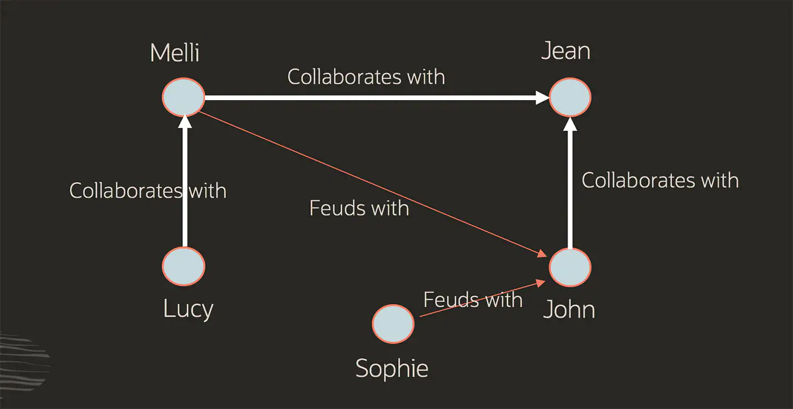
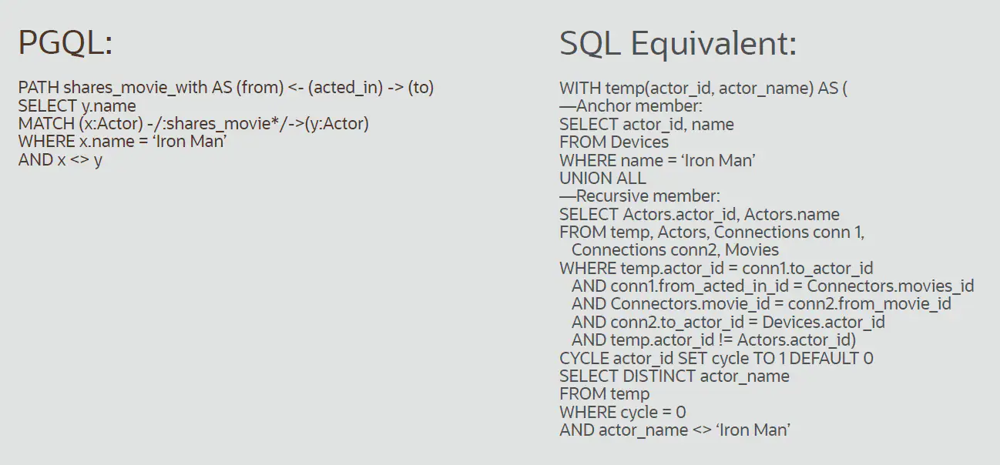
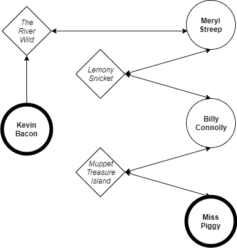
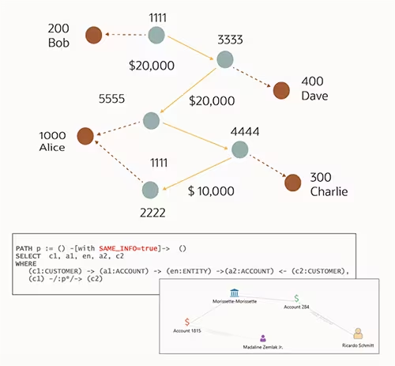

Grafos
Itens do Edital:
b) Fundamentos de Banco de Dados: Diferenciação entre bancos relacionais, multidimensionais, documentos e grafos.
Estrutura de Dados - Aula 23 - Grafos - Conceitos básicos
Banco de dados de grafos definido
Um banco de dados de grafos é definido como uma plataforma especializada e de uso único para criar e manipular grafos. Os grafos contêm nós, arestas e propriedades, todos usados para representar e armazenar dados de uma forma que os bancos de dados relacionais não estão equipados a fazer.
Análise de grafos é outro termo comumente usado e se refere especificamente ao processo de análise de dados em um formato de gráfico usando pontos de dados como nós e relacionamentos como arestas. A análise de grafos requer um banco de dados com suporte a formatos de grafos; pode ser um banco de dados de grafos dedicado ou um banco de dados convergente com suporte a vários modelos de dados, incluindo grafos.
Aprenda a usar grafos com um workshop passo a passo
Tipos de banco de dados de grafos
Há dois modelos populares de bancos de dados de grafos: grafos de propriedades e grafos RDF. O grafo de propriedades foca análises e consultas, enquanto o grafo RDF enfatiza a integração de dados. Ambos os tipos de grafos consistem em uma coleção de pontos (vértices) e nas conexões entre esses pontos (bordas). Mas também existem diferenças.
Gráficos de propriedades
Os grafos de propriedades são usados para modelar relacionamentos entre dados e permitem a consulta e a análise de dados com base nesses relacionamentos. Um grafo de propriedades tem vértices que podem conter informações detalhadas sobre um assunto e bordas que denotam a relação entre os vértices. Os vértices e bordas podem ter atributos, chamados propriedades, com os quais estão associados.
Neste exemplo, um conjunto de colegas e seus relacionamentos são representados como um grafo de propriedades.

Graças à sua versatilidade, os grafos de propriedades são usados em várias indústrias e setores, como finanças, manufatura, segurança pública, varejo e muitos outros.
Grafos RDF
Os grafos RDF (RDF significa Resource Description Framework) cumprem um conjunto de padrões W3C (Worldwide Web Consortium) criados para representar instruções e são ideias para representar metadados complexos e dados mestre. Eles costumam ser usados para dados vinculados, integração de dados e grafos de conhecimento. Eles podem representar conceitos complexos em um domínio ou fornecer semântica avançada e inferência de dados.
No modelo RDF uma declaração é representada por três elementos: dois vértices conectados por uma borda refletindo o assunto, o predicado e o objeto de uma frase - isso é conhecido como um triplo RDF. Cada vértice e borda são identificados por um URI único, ou Identificador de Recurso Único. O modelo RDF fornece uma maneira de publicar dados em um formato padrão com semântica bem definida, permitindo a troca de informações. Agências de estatísticas governamentais, empresas farmacêuticas e organizações de saúde adotaram amplamente os grafos RDF.
Como grafos e bancos de dados de grafos funcionam
Grafos e bancos de dados de grafos fornecem modelos de grafos para representar relacionamentos nos dados. Eles permitem que os usuários executem consultas de travessia com base em conexões e apliquem algoritmos de grafos para encontrar padrões, caminhos, comunidades, influenciadores, pontos únicos de falha e outros relacionamentos, resultando em uma análise mais eficiente em escala em grandes volumes de dados. O poder dos grafos está na análise, nos insights que fornecem e na capacidade de vincular fontes de dados diferentes.
Quando se trata de analisar grafos, os algoritmos exploram os caminhos e distâncias entre os vértices, a importância dos vértices e o clustering dos vértices. Por exemplo, para determinar a importância, os algoritmos costumam examinar bordas de entrada, a importância de vértices vizinhos e outros indicadores.
Algoritmos de gráfico, operações projetadas especificamente para analisar relacionamentos e comportamentos entre dados em gráficos, tornam possível entender coisas que são difíceis de ver com outros métodos. Quando se trata de analisar grafos, os algoritmos exploram os caminhos e distâncias entre os vértices, a importância dos vértices e o clustering dos vértices. Os algoritmos costumam examinar bordas de entrada, a importância de vértices vizinhos e outros indicadores para ajudar a determinar a importância. Por exemplo, algoritmos de grafos podem identificar qual indivíduo ou item está mais conectado a outros nas redes sociais ou processos comerciais. Os algoritmos podem identificar comunidades, anomalias, padrões comuns e caminhos que conectam indivíduos ou transações relacionadas.
Como os bancos de dados de grafos armazenam relacionamentos de forma explícita, as consultas e os algoritmos que utilizam a conectividade entre vértices podem ser executados em subsegundos em vez de horas ou dias. Os usuários não precisam executar inúmeras junções e os dados podem ser usados com mais facilidade para análise e aprendizado de máquina para descobrir mais sobre o mundo ao nosso redor.
Vantagens de bancos de dados de grafos
O formato de grafo fornece uma plataforma mais flexível para encontrar conexões distantes ou analisar dados com base em aspectos como força ou qualidade do relacionamento. Os grafos permitem que você explore e descubra conexões e padrões em redes sociais, IoT, big data, data warehouses e também dados de transações complexas para vários casos de uso de negócios, incluindo detecção de fraude em bancos, descoberta de conexões em redes sociais e cliente 360. Hoje, grafos são cada vez mais usados como parte da ciência de dados para tornar as conexões em relacionamentos mais claras.
Como os bancos de dados de grafos armazenam os relacionamentos de forma explícita, as consultas e os algoritmos que utilizam a conectividade entre vértices podem ser executados em subsegundos em vez de horas ou dias. Os usuários não precisam executar inúmeras junções e os dados podem ser usados com mais facilidade para análise e aprendizado de máquina para descobrir mais sobre o mundo ao nosso redor.
Os bancos de dados de grafos são uma ferramenta extremamente flexível e poderosa. Devido ao formato do grafo, relacionamentos complexos podem ser determinados para insights mais profundos com muito menos esforço. Os bancos de dados de grafos geralmente executam consultas em linguagens como Property Graph Query Language (PGQL). O exemplo abaixo mostra a mesma consulta em PGQL e SQL.

Como visto no exemplo acima, o código PGQL é mais simples e muito mais eficiente. Como os grafos enfatizam as relações entre os dados, eles são ideais para vários tipos diferentes de análises. Em particular, os bancos de dados de grafos se destacam em:
Encontrar o caminho mais curto entre dois nós
Determinar os nós que criam a maior atividade/influência
Analisar a conectividade para identificar os pontos mais fracos de uma rede
Analisar o estado da rede ou comunidade com base na distância/densidade de conexão em um grupo
Como funcionam bancos de dados de grafos e análise de grafos
Um exemplo simples de análise de grafos em ação é a imagem abaixo, que mostra uma representação visual do popular jogo de festa “Six Degrees of Kevin Bacon”. Para os novatos, este jogo envolve a criação de conexões entre Kevin Bacon e outro ator com base em uma cadeia de filmes mútuos. Essa ênfase nos relacionamentos se torna a maneira ideal de demonstrar a análise de grafos.
Imagine um conjunto de dados com duas categorias de nós: cada filme já feito e cada ator que esteve nesses filmes. Em seguida, usando o grafo, executamos uma consulta pedindo para conectar Kevin Bacon ao ícone Muppet, Miss Piggy. O resultado seria o seguinte:

Neste exemplo, os nós disponíveis (vértices) são atores e filmes e os relacionamentos (arestas) são o status de “atuado”. A partir daqui, a consulta retorna os seguintes resultados:
Kevin Bacon atuou em The River Wild com Meryl Streep.
Meryl Streep atuou em Lemony Snicket’s A Series of Unfortunate Events, com Billy Connolly.
Billy Connolly atuou em Muppet Treasure Island com Miss Piggy.
Os bancos de dados de grafos podem consultar muitos relacionamentos diferentes para este exemplo de Kevin Bacon, como:
“Qual é a corrente mais curta para conectar Kevin Bacon a Miss Piggy?” (análise do caminho mais curto, conforme usado no jogo Six Degrees acima)
“Quem trabalhou com o maior número de atores?” (grau de centralidade)
“Qual é a distância média entre Kevin Bacon e todos os outros atores?” (centralidade de proximidade)
Este é, obviamente, um exemplo mais divertido do que a maioria dos usos de análise de grafos. Mas essa abordagem funciona em quase todos os big data - qualquer situação em que um grande número de registros mostre uma conectividade natural entre si. Algumas das formas mais populares de usar a análise de grafos são para analisar redes sociais, redes de comunicação, tráfego e uso do site, dados de estradas do mundo real, e transações e contas financeiras.
Caso de uso do banco de dados de grafos: lavagem de dinheiro

Conceitualmente, a lavagem de dinheiro é simples. O dinheiro sujo é repassado para misturá-lo com fundos legítimos e, depois, transformá-lo em ativos tangíveis. Esse é o tipo de processo usado na análise dos Panama Papers.
Especificamente, uma transferência de dinheiro circular envolve um criminoso que envia grandes quantias de dinheiro obtidas de forma fraudulenta para si mesmo, mas oculta isso por meio de uma longa e complexa série de transferências válidas entre contas “normais”. Essas contas “normais” são, na verdade, contas criadas com identidades sintéticas. Eles normalmente compartilham certas informações semelhantes porque são geradas a partir de identidades roubadas (endereços de email, endereços etc.) e são essas informações relacionadas que tornam a análise de grafos tão boa para fazê-las revelar suas origens fraudulentas.
Para simplificar a detecção de fraude, os usuários podem criar um grafo de transações entre entidades e entidades que compartilham algumas informações, incluindo os endereços de email, senhas, endereços e muito mais. Após a criação de um grafo, uma consulta simples encontrará todos os clientes com contas com informações semelhantes e revelará quais contas enviam dinheiro entre si.
Caso de uso do banco de dados de grafos: fraude com cartão de crédito
Os bancos de dados de grafos se tornaram uma ferramenta poderosa no setor financeiro como meio de detecção de fraudes. Apesar dos avanços na tecnologia antifraude, como o uso de chips embutidos em cartões, a fraude ainda pode ocorrer de várias maneiras. Dispositivos de leitura podem roubar detalhes de fitas magnéticas, uma técnica comumente usada em locais que ainda não instalaram leitores de chip. Depois que esses detalhes são armazenados, eles podem ser carregados em um cartão falsificado para fazer compras ou sacar dinheiro.
Como meio de detecção de fraude, a identificação de padrões costuma ser a primeira linha de defesa. Os padrões de compra esperados são baseados na localização, frequência, tipos de lojas e outras coisas que se enquadram no perfil do usuário. Quando algo parece totalmente anormal, por exemplo, uma pessoa que fica a maior parte do tempo na área da baía de San Francisco, na Califórnia, repentinamente faz compras noturnas na Flórida, isso sinaliza como potencialmente fraudulento.
O poder de computação necessário para isso é simplificado significativamente com a análise de grafos. A análise de grafos se destaca no estabelecimento de padrões entre nós, neste caso, as categorias de nós são definidas como contas (titulares de cartão), locais de compra, categoria de compra, transações e terminais. É fácil identificar padrões de comportamento naturais; por exemplo, em um determinado mês, uma pessoa poderia:
Comprar ração (categoria de compra) em diferentes lojas de animais (terminais)
Pagar por restaurantes nos finais de semana (metadados de transações) na região (locais de compra)
Comprar equipamento de reparo (categoria de compra) em uma loja de local de reparo (local da conta, local da compra)
A detecção de fraude é normalmente tratada com machine learning (aprendizado de máquina), mas a análise de grafos pode complementar esse esforço para criar um processo mais preciso e eficiente. Graças ao foco nos relacionamentos, os resultados se tornaram indicadores eficazes na determinação e sinalização de registros fraudulentos, realizando curadoria e preparando os dados antes que eles possam ser realmente usados.
Para saber mais sobre outros casos de uso de banco de dados de grafos, baixe o ebook gratuito (PDF)
O futuro de bancos de dados de grafos
Bancos de dados de grafos e técnicas de grafos acompanharam o aumento do poder de computação e de big data na última década. Na verdade, está ficando cada vez mais claro que eles se tornarão a ferramenta padrão para analisar um admirável mundo novo de relacionamentos de dados complexos. À medida que as empresas e organizações continuam promovendo os recursos de big data e análise, a capacidade de derivar insights de maneiras cada vez mais complexas, torna os bancos de dados de grafos essenciais para as necessidades de hoje e os sucessos de amanhã.
A Oracle facilita a adoção de tecnologias de grafos. O Oracle Database e o Oracle Autonomous Database incluem um banco de dados de grafos e um mecanismo de análise de grafos para que os usuários possam descobrir mais insights sobre dados usando o poder dos algoritmos de grafos, consultas de correspondência de padrões e visualização. Grafos fazem parte do banco de dados convergente da Oracle, que oferece suporte a requisitos de multimodelo, multicarga de trabalho e multilocatário – tudo em um único mecanismo de banco de dados.
Embora todos os bancos de dados de grafos aleguem seu alto desempenho, as ofertas de grafos da Oracle são eficientes tanto em desempenho quanto em algoritmos de consulta, além de serem estreitamente integradas ao banco de dados da Oracle. Isso facilita para os desenvolvedores a adição de análises de grafos aos aplicativos existentes e o uso da escalabilidade, consistência, recuperação, controle de acesso e segurança oferecidos pelo banco de dados por padrão.
O que é um banco de dados de grafos?
Definição do banco de dados de grafos
Os bancos de dados de grafos foram criados especificamente para possibilitar o armazenamento de relacionamentos e a navegação por eles. Os relacionamentos são elementos distintos que agregam a maior parte do valor para os bancos de dados de grafos. Os bancos de dados de grafos usam nós para armazenar entidades de dados e arestas para armazenar os relacionamentos entre as entidades. Uma aresta tem sempre um nó inicial, um nó final, um tipo e um direcionamento, o que possibilita a descrição dos relacionamentos entre pais e filhos, das ações, das propriedades e assim por diante. A quantidade e os tipos de relacionamentos que um nó pode ter são ilimitados.
Um grafo em um banco de dados de grafos pode ser cruzado com tipos de arestas específicos ou por todo o grafo. Nos bancos de dados de grafos, o cruzamento das associações ou dos relacionamentos ocorre muito rapidamente, uma vez que os relacionamentos entre os nós não são calculados no momento das consultas, mas persistem no banco de dados. Os bancos de dados de grafos são vantajosos em casos de uso como redes sociais, mecanismos de recomendação e detecção de fraudes, em que é necessário criar relacionamentos entre os dados e consultar rapidamente esses relacionamentos.
O grafo a seguir é um exemplo de grafo de rede social. Considerando as pessoas (nós) e seus relacionamentos (arestas), é possível descobrir quem são os “amigos dos amigos” de uma pessoa específica, por exemplo, os amigos dos amigos de Howard.
Casos de uso
Detecção de fraudes
Os bancos de dados de grafos podem fazer uma prevenção sofisticada contra fraudes. Com os bancos de dados de grafos, você pode usar relacionamentos para processar transações financeiras e de compras praticamente em tempo real. Com consultas de grafos rápidas, você pode detectar, por exemplo, se um possível comprador está usando o mesmo endereço de e-mail e cartão de crédito que o usado em um caso de fraude conhecido. Os bancos de dados de grafos também podem ajudá-lo a detectar facilmente padrões de relacionamento, como várias pessoas associadas a um endereço de e-mail pessoal ou várias pessoas compartilhando o mesmo endereço IP, mas residentes em endereços físicos diferentes.
Mecanismos de recomendação
Os bancos de dados de grafos são uma boa opção para aplicativos de recomendação. Com os bancos de dados de grafos, você pode armazenar em um grafo os relacionamentos entre as categorias de informação, como os interesses, os amigos e o histórico de compras dos clientes. Você pode usar um banco de dados de grafos altamente disponível para fazer recomendações de produtos a um usuário com base em quais produtos foram comprados por outras pessoas que seguem o mesmo esporte e têm histórico de compras similar. Além disso, é possível identificar pessoas com um amigo em comum, mas que ainda não se conhecem, para fazer uma recomendação de amizade.
Fontes
https://www.oracle.com/br/autonomous-database/what-is-graph-database/
https://aws.amazon.com/pt/nosql/graph/